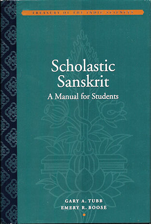

mailto:payer@payer.de
Zitierweise | cite as:
Payer, Alois <1944 - >: Sanskritkurs. -- Lösung der Übungen. -- Übungen Lektion 46 - 52. -- Fassung vom 2009-01-27. -- URL: http://www.payer.de/sanskritkurs/uebung46.htm
Erstmals hier publiziert: 2009-01-27
Überarbeitungen:
Anlass: Lehrveranstaltungen 1980 - 1984
©opyright: Dieser Text steht der Allgemeinheit zur Verfügung. Eine Verwertung in Publikationen, die über übliche Zitate hinausgeht, bedarf der ausdrücklichen Genehmigung des Verfassers
Dieser Text ist Teil der Abteilung Sanskrit von Tüpfli's Global Village Library
Falls Sie die diakritischen Zeichen nicht dargestellt bekommen, installieren Sie eine Schrift mit Diakritika wie z.B. Tahoma.
Die Devanāgarī-Zeichen sind in Unicode kodiert. Sie benötigen also eine Unicode-Devanāgarī-Schrift.
A) Bestimmen und übersetzen Sie folgende Formen:
Lösungen ohne Anspruch auf Vollständigkeit!
जज्ञिषे । जन् 4Ā ज्ञा 9U Perf.2.sg.Ā
B) Übersetzen Sie:
प्रजहाति यदा कामानात्मन्येवात्मना तुष्टः स्थितप्रज्ञस्तदोच्यते ॥१॥
Wenn jemand die Gelüste aufgibt und mit sich selbst durch sich selbst zufrieden ist, dann sagt man, dass er von fester Einsicht ist.
क्रोधाद्भवति संमोहः
संमोहात्स्मृतिविभ्रमः ।
स्मृतिभ्रंशाद्बुद्धिनाशो
बुद्धिनाशात्प्रनश्यति ॥२॥
Aus Zorn entsteht Verblendung, aus Verblendung entsteht Auflösung der Achtsamkeit, aus dem Verlust der Achtsamkeit Verlust der Einsicht, wegen des Verlusts der Einsicht verdirbt man.
नास्ति बुद्धिरयुक्तस्य ॥३॥
Es gibt keine Einsicht für einen Nicht-Yogin.
Abb.: सक्तः
Darjeeling = দার্জিলিং
/ दार्जिलिंग;
[Bildquelle: thebigdurian. --
http://www.flickr.com/photos/thebigdurian/482884011/. -- Zugriff am
2009-01-23. --
Creative
Commons Lizenz (Namensnennung, keine kommerzielle Nutzung, share alike)]
A) Übersetzen Sie:
यदि गच्छसि गच्छ त्वम् । अहं न गमिष्यामि ॥१॥
Wenn du gehen willst, dann geh! Ich werde nicht gehen.
आर्य प्रेक्षस्व मे परिभवम् ॥२॥
Edler, sieh meine Demütigung!
भो राम यदि मया गन्तव्यं तदैषा कन्यापि मम सहायिनी भवतु ॥३॥
Herr Rāma, wenn ich gehen muss, dann soll auch dieses Mädchen meine Begleiterin sein.
आर्ये तिष्ठ तिष्ठ । न त्वया भेतव्यम् ॥४॥
Gnädige Frau, bleiben Sie stehen, bleiben Sie stehen. Sie brauchen keine Angst zu haben.
प्रसीदत्वार्यः ॥५॥
Beruhigen Sie sich, edler Herr!
आर्ये स्वागतं ते ॥६॥
Willkommen, gnädige Frau.
आज्ञापयत्वार्यः किं मया क्रियतामिति ॥७॥
Edler Herr, bitte befehlen Sie, was ich tun soll.
युद्धाय युज्यस्व नैवं पापमवाप्स्यसि ॥८॥
Rüste dich zum Kampf und dir wird so kein Übel geschehen.
प्रश्नः : कस्मात्त्वं भीतः । प्रतिवचनम् : तस्य रामस्य गुणेभ्यः । प्रष्टा : के तस्य गुणा यस्य गृहं प्रविश्याशितव्यमपि नास्ति ॥९॥
Frage: Wovor fürchtest Du dich? Antwort: vor den Vorzügen dieses Rāma. Frager: Was hat der für Vorzüge, in dessen Haus nichts Essbares ist, wenn man kommt.
तवैव हस्ते शस्त्रं तिष्ठतु ॥१०॥
Das Schwert in Deiner Hand bleibe stehen!
भवति न ते परिभवस्तत्रभवतो रामस्य निवेदयितव्यः ॥११॥
Gnädige Frau, ihre Demütigung soll Herrn Rāma nicht berichtet werden.
B.) Übersetzen Sie ins Sanskrit (verwenden Sie den Imperativ):
1. Ich will erhalten werden.
भ्रियै ॥१॥
2. Er soll zufrieden sein.
तुष्यतु ॥२॥
3. Wir wollen rufen.
ह्वयाम ॥३॥
4. Ich will mich dir (चतुर्थ्या) beugen.
तुभ्यं नमानि । नमानि ते ॥४॥
5. Diese Tat soll getan werden.
एतत्कर्म क्रियताम् ॥५॥
6. Sie sollen schlafen (Passivkonstruktion).
भवता सुप्यताम् ॥६॥
7. Mein Sohn strebe nach Reichtum!
पुत्र धने / धनं / धनाय यतस्व ॥७॥
8. Beginnt das Studium!
अध्ययनमारभध्वम् ॥८॥
9. Gebt (प्र-यम्) den Ahnvätern Reisbällchen!
पितृभ्यः पिन्दान्प्रयच्छत ॥९॥
10. Sie sollen sich freuen!
नन्दन्तु ॥१०॥
11. Ich will auf die Welt hinabblicken.
लोकमवेक्षै ॥११॥
12. Wir wollen nach Benares gehen (पद्).
काशीं पद्यआमहै ॥१२॥
13. Sie (pl.) sollen als Opferherren die Götter mit einem Opfer verehren.
देवान्यजन्ताम् ॥१३॥
14. Singe ein Loblied!
स्तोत्रं गाय ॥१४॥
15. Söhne sollen mir geboren werden!
पुत्रा मह्यं / मे जायन्ताम् ॥१५॥
16. Ich will dir mein Haus zeigen.
तुभ्यं मम / मे गृहं दिशानि । त्वां ... दर्शयानि ॥१६॥
17. Gehe von mir weg!
मत्प्रव्रज । मद्व्रज ॥१७॥
18. Er soll befreit werden!
मुच्यताम् ॥१८॥
19. Ich will deine Gattin behüten.
तव भार्यां रक्षाणि ॥१९॥
20. Stirb, Feind!
शत्रो म्रियस्व ॥२०॥
21. Kämpft!
युध्यध्वम् ॥२१॥
22. Sie (pl.) mögen befehlen.
आज्ञापयन्तु ॥२२॥
23. Wir wollen in deinem Haus wohnen.
तव गृहे वसाम ॥२३॥
24. So soll es geschehen!
एवं भवतु । एवं वर्तताम् ॥२४॥
25. Schlage das Pferd!
अश्वं तुद ॥२५॥
26. Sie (pl.) sollen umherirren.
भ्रमन्तु । भ्राम्यन्तु ॥२६॥
27. Berauscht euch!
माद्यत ॥२७॥
28. Das Pferd soll die Last ziehen.
अश्वो भारं कर्षतु ॥२८॥
29. Wir wollen die Welten in Ordnung bringen.
लोकान्कल्पयाम ॥२९॥
30. Trinke den Trank!
पानं पिब ॥३०॥
31. Denke!
मन्यस्व ॥३१॥
32. Sie (pl.) sollen besiegt werden!
जीयन्ताम् ॥३२॥
33. Wir wollen von dir geführt werden.
त्वया नीयामहै ॥३३॥
34. Es möge zum Glück gereichen (geschehen)! (Segenswunsch)
सुखाय भवतात् ॥३४॥
Abb.: माद्यत
Toddy-Shop = കള്ള്
Kochi = കൊച്ചി
[Bildquelle: Nice Logo. --
http://www.flickr.com/photos/nicelogo/869115128/. -- Zugriff am 2009-01-23.
-- Creative
Commons Lizenz (Namensnennung, keine kommerzielle Nutzung, keine
Bearbeitung)]
A) Übersetzen Sie die सुभाषितानि zu Beginn der Lektion.
सत्यम् वद ॥१॥
Sprich die Wahrheit!
धर्मं चर ॥२॥
Halte dich an Recht und Sitte!
मातृदेवो भव ॥३॥
Halte Deine Mutter wie eine Göttin!
गौरवं प्राप्यते दानात् ॥४॥
Freigebigkeit verleiht Würde.
श्वः कार्यमद्य कुर्वीत ॥५॥
Tu heute, was morgen zu tun ist!
Verschiebe nicht auf morgen, was du heute kannst besorgen!
विद्याविहीनः पशुः ॥६॥
Vieh ist ohne Wissen.
लाघवं वैयाकरणस्य भूषणम् ॥७॥
Kürze ist der Schmuck des Grammatikers.
Abb.: विद्याविहीनः पशुः
ca. 1900
[Bildquelle: whatsthatpicture. --
http://www.flickr.com/photos/whatsthatpicture/3011403804/in/set-72157608574746511/
-- Zugriff am 2009-01-24. --
Creative Commons
Lizenz (Namensnennung, keine kommerzielle Nutzung)]
B) Übersetzen Sie ins Sanskrit (verwenden Sie dabei den Imperativ und möglichst Wurzeln der 2. und 3. Präsensklasse):
1. Nachdem du einen Sohn bekommen hast, verlasse die Familie!
पुत्रं लब्ध्वा कुलं जहाहि । जहीहि । जहिहि ॥१॥
2. Nachkommen des Puru, fürchtet euch vor denen, die Böses getan haben!
पैरवाः कृतपापेभ्यो बिभीत ॥२॥
3. Die Mädchen sollen den Bettlern Speise geben.
कन्या भिक्षुभ्यो ऽन्नं ददतु ॥३॥
4. Wir wollen sprechen.
ब्रवाम । वचाम ॥४॥
Abb.: वचाम
"Musicians Preachers", ca. 1900
[Bildquelle: whatsthatpicture. --
http://www.flickr.com/photos/whatsthatpicture/2995927204/in/set-72157608574746511/.
-- Zugriff am 2009-01-24. --
Creative Commons
Lizenz (Namensnennung, keine kommerzielle Nutzung)]
5. Mit den Worten "Komm Mönch!" nahm Buddha den Mann in den Mönchsorden auf (उपसम्पद् Kausativ).
एहि भिक्ष इति बुद्धो नरमुपसमपादयत् ॥५॥
6. Seid wahre Nachfahren Manus!
सद्मानवाः स्त । सन्मानवाः स्त ॥६॥
7. Ich will शिव und die anderen Götter preisen.
शिवादिदेवान्स्तवानि ॥७॥
8. Erzähle!
आख्याहि ॥८॥
9. Miss die Höllen aus!
नरकान्मिमीष्व ॥९॥
10. Sie (pl.) sollen auf diesen Liegen liegen.
एतेषु शयनेषु शेरताम् ॥१०॥
11. Die tigergleichen Männer sollen die töten, die Indra feind sind.
पुरुषव्याघ्रा इन्द्रशत्रून्घ्नन्तु ॥११॥
12. Konzentriere dich!
समाधेहि । समाधत्स्व ॥१२॥
13. Sitzt hier!
अत्राध्वम् ॥१२॥
14. Wir wollen diese Früchte essen.
तानि फलान्यदाम ॥१४॥
15. Der Diener soll die Kuh melken.
दासो धेनुं दोग्धु ॥१५॥
16. König, hüte den Dharma und die Leute!
राजन्धर्मं जनांश्च पाहि ॥१६॥
17. Lehre die Schüler den Veda!
शिष्याञ्शाधि वेदम् । शिष्याञ्छाधि वेदम् ॥१७॥
18. Er soll neue Kleider anziehen.
नवानि वस्त्राणि वस्ताम् ॥१८॥
19. Sie (pl.) sollen in meinem Haus sitzen.
मम गृह आसताम् ॥१९॥
20. Ehemänner sollen ihre Gattinnen erhalten (i. S. v. Unterhalt).
भर्तारो भार्या बिभ्रतु ॥२०॥
Abb.: तानि फलान्यदाम
āmalaka = Ambla = Phyllanthus emblica L.
[Bildquelle: Harshad Sharma. --
http://www.flickr.com/photos/harshadsharma/66105376/. -- Zugriff am
2009-01-23. --
Creative
Commons Lizenz (Namensnennung, keine kommerzielle Nutzung, keine
Bearbeitung)]
Abb.: अस्वतन्त्राः स्त्रियः कार्याः पुरुषैः
स्वैर्दिवानिशम् ।
"Hindu woman", ca. 1900
[Bildquelle: whatsthatpicture. --
http://www.flickr.com/photos/whatsthatpicture/2993550296/in/set-72157608574746511/.
-- Zugriff am 2009-01-24. --
Creative Commons
Lizenz (Namensnennung, keine kommerzielle Nutzung)]
मनुस्मृति ९ (स्त्रीधर्मः):
अस्वतन्त्राः स्त्रियः कार्याः पुरुषैः
स्वैर्दिवानिशम् ।
विषयेषु च सज्जन्त्यः संस्थाप्या आत्मनो वशे ॥२॥
Die Männer müssen ihre Frauen Tag und Nacht abhängig machen. Die Frauen, die an Sinnesobjekten haften, müssen unter die Kontrolle ihrer Männer gebracht werden.
पिता र्क्षति कौमरे भर्ता रक्षति यौवने ।
रक्षन्ति स्थाविरे पुत्रा न स्त्री स्वातन्त्र्यमर्हति ॥३॥
Ihr Vater behütet sie zur Zeit ihrer Jungfernschaft, ihr Gatte behütet sie in ihrer Jugend, ihre Söhne behüten sie im Alter. Nicht ist eine Frau fähig zur Eigenständigkeit.
काले
ऽदाता
पिता वाच्यो वाच्यश्चानुपनयन्पतिः ।
मृते भर्तरि पुत्रस्तु वाच्यो मातुररक्षिता ॥४॥
Tadelnswert ist der Vater, der seine Tochter nicht zur rechten Zeit zur Hochzeit verspricht. Tadelnswert ist auch der Gatte, der nicht zur rechten Zeit mit ihr Geschlechtsverkehr hat. Der Sohn ist aber zu tadeln, der nach dem Tod ihres Gatten kein Behüter seiner Mutter ist.
सूक्ष्मेभ्यो
ऽपि प्रसङ्गेभ्यः स्त्रियो
रक्ष्या विशेषतः ।
द्वयोर्हि कुलयोः शोकमावहेयुररक्षिताः ॥५॥
Besonders behüten muss man Frauen vor auch geringfügigen Gelegenheiten. Unbehütet würden sie Kummer in zwei Familien bringen.
इमं हि सर्ववर्णानां पश्यन्तो धर्ममुत्तमम् ।
यतन्ते रक्षितुं भार्यां भर्तारो दुर्बला अपि ॥६॥
Dies als höchste Aufgabe aller Stände sehend, bemühen sich auch schwache Gatten, ihre Gattinnen zu behüten.
स्वां प्रसूतिं चरित्रं च कुलमात्मानमेव च ।
स्वं च धर्मं प्रयत्नेन जायां रक्षन्हि रक्षति ॥७॥
Wer seine Frau sorgsam behütet, behütet nämlich seine Nachkommenschaft, seinen Lebenswandel, seine Familie, sich selbst und seine religiöse Pflicht.
पतिर्भार्यां संप्रविश्य गर्भो भूत्वेह जायते ।
जायायास्तद्धि जायात्वं यद् अस्यां जायते पुनः ॥८॥
Der Gatte tritt in seine Gattin ein, wird zum Embryo und wird dann auf dieser Welt geboren. Es ist das Frausein der Frau (jâyâ), dass ihr Mann von ihr wiedergeboren wird.
Zur Erklärung dieses Textes siehe:
Payer, Alois <1944 - >: Dharmashastra : Einführung und Überblick. -- 8. Manu IX: Sitte und Recht von Ehe und Familie. -- 2. Manu IX, 1-55. -- URL: http://www.payer.de/dharmashastra/dharmash082.htm
Abb.: पतिर्भार्यां संप्रविश्य गर्भो भूत्वेह जायते
[Bildquelle: Henna Sooq. --
http://www.flickr.com/photos/hennasooq/458793530/. -- Zugriff am 2009-01-23.
-- Creative
Commons Lizenz (Namensnennung, keine kommerzielle Nutzung, keine
Bearbeitung)]
Bestimmen Sie folgende Formen:
Abb.: गायी
Baul = বাউল
Puducherry = புதுச்சேரி
[Bildquelle: Meditant. --
http://www.flickr.com/photos/meditant/433770994/. -- Zugriff am 2009-01-23.
-- Creative
commons Lizenz (Namensnennung, keine kommerzielle Nutzung, keine
Bearbeitung)]
बान (7. Jhdt. n. Chr.): कादम्बरी, ed. M. R. Kale, 1968, S. 35f.
Fragen des Königs शूद्रक von विदिशा an den Papagei वैशम्पायन:
नरपतिरब्रवीत् । आस्तां तावत्सर्वमेवेदम् । अपनयतु नः कुतूहलम् । आवेदयतु भवानादितः प्रभृति कार्त्न्येनात्मनो जन्म कस्मिन्देशे । भवान्कथं जातः । केन वा नाम कृतम् । का माता । कस्ते पिता । कथं वेदानामागमः । कथं शास्त्राणां परिचयः । कुतः कलाः समासादिताः । किं जन्मान्तरानुस्मरणमुत वरप्रदानम् । अथवा विहंगवेषधारी कश्चिच्छन्नं विवससि । क्व वा पूर्वमुषितम् । कियद्वा वयः । कथं पञ्जरबन्धः । कथं चाण्डालहस्तगमनम् । इह वा कथमागमनमिति ।
वैशम्पायनस्तु स्वयमुपजातकुतूहलेन सबहुमानमवनि्पतिना पृष्टो मुहूर्तमिव ध्यात्वा सादरमब्रवीत् । देव मतीयं कथा । यदि कौतुकमाकर्ण्यताम् ॥
Der König sprach: "Lassen wir all das auf sich beruhen! Befriedigen Sie unsere Neugier! Herr!, erzählen Sie uns von Anfang an: In welchem Land wurden Sie geboren? Wer hat Ihnen den Namen gegeben? Wer ist Ihre Mutter. Wie haben Sie die Veden erhalten? Wie haben Sie sich mit den Lehrwerken vertraut gemacht? Woher haben Sie die Künste erworben? Können Sie sich an frühere Geburten erinnern oder Wünsche erfüllen? Oder bewohnen Sie indem Sie das Kleid eines Vogels tragen ein Versteck? Oder wo wohnten Sie früher? Oder wie alt sind Sie? Wie wurden Sie in einen Käfig gefangen? Und wie sind Sie in die Hände von Cāṇḍālas gekommen? Oder wie sind Sie hierher gekommen?"
Vaiśampanya aber, der vom Herrn der Erde mit spontan entstandener Neugier mit großem Respekt gefragt worden war, überlegte einen Augenblick und antwortete dann voll Hochachtung: "König, das ist eine lange Geschichte. Wenn es Sie interessiert, leihen Sie mir Ihr Ohr!"
Abb.: शुकः
Kranker Papagei, Jain Bird Hospital, Old Delhi
[Bildquelle: arimoore. --
http://www.flickr.com/photos/arimoore/316483575/. -- Zugriff am 2009-01-23.
-- Creative
Commons Lizenz (Namensnennung, keine kommerzielel Nutzung)]
A) Zur Wiederholung der Deklination: folgender Vers enthält alle Deklinationsformen im Singular zu गुरु m.:
गुरुरेव गतिर्गुरुमेव भजे
गुरुणैव सहास्मि नमो गुरवे ।
न गुरोः परमं शिशुरस्मि गुरोर्
मतिरस्ति गुरौ मम पाहि गुरो ॥
Mein Meister ist meine Zuflucht,
Meinen Meister liebe ich,
Ich bin mit meinem Meister zusammen,
Verehrung meinem Meister,
Es gibt nichts höheres als den Meister,
Ich bin das Kind meines Meisters,
Mein Herz ist bei meinem Meister,
Meister, hüte mich!
B) Übersetzen Sie:
मनुस्मृति ४, १७८
येनास्य पितरो याता
येन याताः पितामहाः ।
तेन यायात्सतां मार्गम्
तेन गच्छन्न रिष्यते ॥१॥
Man gehe auf dem Weg der Guten, auf dem die Väter gegangen sind, auf dem die Großväter gegangen sind, Wenn man auf diesem Weg geht, dann erleidet man keinen Schaden.
मनुस्मृति ३, ६३
कुविवाहैः क्रियालोपैर्
वेदानध्ययनेन च ।
कुलान्यकुलतां यान्ति
ब्राह्मणातिक्रमेण च ॥२॥
Familien werden zu Nichtfamilien durch schlechte Heiraten, durch Unterlassen der Riten, durch Nichtstudium der Veden und durch Vergehen gegen Brahmanen.
मनुस्मृति ३, ६०
संतुष्टो भार्यया भर्ता
भर्त्रा भार्या तथैव च ।
यस्मिन्नेव कुले नित्यम्
कल्याणं तत्र वै ध्रुवम् ॥३॥
Eine Familie, in der der Gatte mit der Gattin stets zufrieden ist und die Gattin mit dem Gatten, in einer solchen Familie ist stetes Glück gewiss.
मनुस्मृति ३, ७५ - ७६: Über die Notwendigkeit des Opfers
स्वाध्याये नित्ययुक्तः स्याद्
दैवे चैवेह कर्मणि ।
दैवे कर्मणि युक्तो हि
बिभर्तीदं चराचरम् ॥४॥
अग्नौ प्रास्ताहुतिः सम्यग्
आदित्यमुपतिष्ठते ।
आदित्याज्जायते वृष्टिर्
वृष्टेरन्नं ततः प्रजाः ॥५॥
Man engagiere sich stets im Vedastudium und in den Riten für die Götter. Wer sich in den Riten für die Götter engagiert, erhält nämlich diese Welt aus Belebtem und Unbelebtem. Das Opfer, das in rechter Weise ins Feuer geworfen wird, geht zur Sonne, aus der Sonne entsteht Regen, aus Regen Speise, daraus die Geschöpfe.
Abb.: दैवे कर्मणि युक्तो हि
बिभर्तीदं चराचरम्
॥
ca. 1900
[Bildquelle: whatsthatpicture. --
http://www.flickr.com/photos/whatsthatpicture/2992703533/in/set-72157608574746511/.
-- Zugriff am 2009-01-24. --
Creative Commons
Lizenz (Namensnennung, keine kommerzielle Nutzung)]
योगसूत्र २, १६ - १७
हेयं दुःखमनागतम् ॥६॥
द्रष्टृदृश्ययोः संयोगो हेयहेतुः ॥७॥
Aufzugeben ist das zukünftige Leiden.
Ursache dieses Aufzugebenden ist die Verbindung von Sehendem und Sichtbarem [= Wahrnehmendem und Wahrnehmbarem].
कौटिलीयार्थशास्त्र १, १५: Über Ratgeber des Königs
न किंचिदवमन्येत
सर्वस्य शृणुयानमतम् ।
बालस्याप्यर्थवद्वाक्यम्
उपयुन्जीत पाण्डितः ॥८॥
[Der König] soll nichts verschmähen, er höre die Meinung eines jeden. Ein Gelehrter eignet sich auch das Wort eine Knaben an, wenn es bedeutsam ist.
मनुस्मृति २, १४० - १४२: Definition von आचार्य, उपाध्याय, गुरु
उपनीय तु यः शिष्यं
वेदमधापयेत्द्द्विजः ।
सकल्पं सरहस्यं च
तमाचार्यां प्रचक्षते ॥९॥
Ācārya nennt man den Zweimalgeborenen, der dem Schüler Upanayana gibt und ihn dann den Veda, das Ritual und die Geheimlehre lehrt.
एकदेशं तु वेदस्य
वेदाङ्गान्यपि वा पुनः ।
यो
ऽध्यापयति
वृत्त्यर्थम्
उपाध्यायः स उच्यते ॥१०॥
Upādhyāya nennt man den, der um seines Lebensunterhalts willen einen Teil des Veda oder die Hilfswissenschaften lehrt.
निषेकादीनि
कर्माणि
यः करोति यथाविधि ।
संभावयति चान्नेन
स विप्रो गुरुरुच्यते ॥११॥
Guru nennt man den Brahmanen, der vorschriftsgemäß Niṣeka und die anderen Rituale vollzieht und ihn durch Speise entstehen lässt.
Zur Erklärung siehe:
Payer, Alois <1944 - >: Manusmṛti. -- Kapitel 2. -- 5. Vers 101 - 158. -- http://www.payer.de/manu/manu02101.htm
Abb.: संतुष्टो भार्यया भर्ता
भर्त्रा भार्या तथैव च ।
यस्मिन्नेव कुले नित्यम्
कल्याणं तत्र वै ध्रुवम्
॥
Christliche Familie, ca. 1900
[Bildquelle: whatsthatpicture. --
http://www.flickr.com/photos/whatsthatpicture/2993549480/. -- Zugriff am
2009-01-24. --
Creative Commons Lizenz (Namensnennung, keine kommerzielle Nutzung)]
१. कौटिलीयार्थशास्त्र १, ३, ९ - १२ आश्रमधर्मः
गृहस्तस्य
स्वधर्माजीवस्तुल्यैरसमानार्षिभिर्वैवाह्यमृतुगामित्वं देवपित्रातिथिपूजा भृत्येषु
त्यागः शेषभोजनं च ।९।
ब्रह्मचारिणः स्वाध्यायो ऽग्निकार्याभिषेकौ
भैक्षाव्रतित्वमाचार्ये प्राणान्तिकी वृत्तिस्तदभावे गुरुपुत्रे सब्रह्मचारिणि वा
।१०।
वानप्रस्थस्य ब्रह्मचर्यं भूमौ शय्या जाटाजिनधारणमग्निहोत्राभिषेकौ
देवतापित्रतिथिपूजा वन्यश्चाहारः ।११।
प्रव्राजकस्य जितेन्द्रियत्वमनारम्भो निष्किंचनत्वं सङ्गत्यागो
भैक्षाव्रतमनेकत्रारण्ये च वासो बाह्याभ्यन्तरं च शौचम् ॥१२॥
Ein Haushalter soll
- einen seinem spezifischen Dharma entsprechenden Lebensunterhalt haben
- mit ebenbürtigen, aber einem anderen Ṛṣi habenden (= aus einem anderen Gotra) eine Heiratsverbindung eingehen
- zu den fruchtbaren Zeiten der Frau Geschlechtsverkehr haben
- Götter, Vorväter und Gäste ehren
- gegen die von ihm Abhängigen freigebig sein
- und das essen, was übrig bleibt.
Ein zölibatärer Vedastudent soll
- den Veda studieren
- das Feuer rituell pflegen
- Besprengungen vollziehen
- das Gelübde halten, von Almosenspeise zu leben
- sich beim Ācārya aufhalten und sich um ihn kümmern bis zu dessen Tod, oder beim Sohn des Meisters oder bei einem Mitschüler.
Ein Waldeinsiedler soll
- zölibatär leben
- auf dem Erdboden liegen
- Haarflechten und ein Antilopenfell tragen
- Feueropfer und Besprengungen vollziehen
- Götter, Vorväter und Gäste ehren
- sich von Waldprodukten ernähren.
Ein heimloser Wanderasket soll
- seine Sinne besiegen
- nichts beginnen
- ohne jeglichen Besitz sein
- alles Anhängen aufgeben
- das Gelübde halten, von Almosenspeise zu leben
- an vielen Orten in der Wildnis wohnen
- innerlich und äußerlich rein sein.
२. कौटिलीयार्थशास्त्र १, ३, १६ - १७ Über die Notwendigkeit des Achtens auf den वर्नाश्रमधर्म
तस्मात्स्वधर्मं भूतानाम्
राजा न व्यभिचारयेत्
।
स्वधर्मं संदधानो हि
प्रेत्य चेह च नन्दति ॥१६॥
व्यवस्थितार्यमर्यादः
कृतवर्णाश्रमस्थितिः ।
त्रय्याभिरक्षितो लोकः
प्रसीदति न सीदति ॥१७॥
Deshalb soll der König die Wesen nicht von ihrem spezifischen Dharma abweichen lassen. Wer nämlich seinen spezifischen Dharma erfüllt, der erfreut sich nach seinem Tod und in diesem Leben. Wenn die edle Grenze Edlen fest steht, wenn Stände und Lebensstadien beständig gemacht sind, dann lebt die von den drei Veden behütete Welt friedlich und geht nicht unter.
३. बाण (7. Jhdt. n. Chr.): कादम्बरी ed. K.P. Parab, 1896, S. 65ff.: Überlegungen des Papagei वैशम्पायन über das Jägerdasein:
आसीच्च मे मनसि -- अहो मोहप्रायमेतेषां जीवितं साधुजनगर्हितं च चरितम् । तथा हि । पुरुषपिशितोपहारे धर्मबुद्धिः , अहारः साधुजनगर्हितो मधुमांसादिः , श्रमो मृगया , शास्त्रं शिवारुतम् , समुपदेष्टारः सद्सतां कौशिकाः , प्रज्ञा शकुनिज्ञानम् , परिचिताः श्वानः , राज्यं शून्यास्वटवीषु , आपानकमुत्सवः , मित्राणि क्रुरकर्मसाधनानि धनूंषि , सहाया विषदिग्धमुखा भुजंगा इव सायकाः , गीतमुत्सादकारि मुग्धमृगाणाम् , कलत्राणि बन्दीगृहीताः परयोषितः , क्रूरात्मभिः शार्दूलैः सह संवासः , पशुरुधिरेण देवतार्चनम् , मांसेन बलिकर्म , चौर्येण जीवनम् , भूषणानि भुजंगमणयः , वनकरिमदैरङ्गरागः , यस्मिन्नेव कानने निवसन्ति तदेवोत्ख्यातमूलमशेषतः कुर्वत इति चिन्तयत्येव मयि शबरसेनापतिः समुपाविशत् ॥
Und es kam mir zu Bewusstsein: Ach!, ihr [der Jäger] Leben besteht hauptsächlich aus Verblendung und ihr Wandel wird von den Guten getadelt. So nämlich: Sie halten die Darbringung von Menschenfleisch als rechte Religion ; ihre Nahrung besteht in von den Guten getadeltem Honigwein, Fleisch und ähnlichem ; ihr Bemühen ist Jagd ; ihre Lehrwerk das Geheul der Schakale ; Eulen sind ihre Lehrer von Gut und Böse ; ihre Weisheit ist Vogelkunde ; ihre Vertrauten sind Hunde ; ihr Reich ist in leeren Wäldern ; ihr Fest ist Besäufnis ; ihre Freunde sind Bogen, die grausame Taten vollbringen ; ihre Gefährten sind Pfeile, deren Spitze mit Gift beschmiert ist wie Schlangen ; ihr Gesang bringt verwirrtem Wild Verderb ; ihre Frauen sind die geraubten jungen Mädchen anderer ; sie wohnen zusammen mit grausamen Tigern ; mit Tierblut verehren sie die Gottheiten ; Fleisch bringen sie als Bällchenopfer dar ; von Raub leben sie ; ihr Schmuck sind Schlangenedelsteine ; ihre Glieder reiben sie mit dem Mast-Saft von Waldelefanten ein ; jeden Wald, in dem sie sich niederlassen, entwurzeln sie vollständig -- Während ich so überlegte, trat der General der Śabaras zu mir ein.
Abb.: Jäger, Pinjamanthai
[Bildquelle: Tom Maisey. --
http://www.flickr.com/photos/tomm/121179525/. -- Zugriff am 2009-01-26. --
Creative Commons
Lizenz (Namensnennung)]
४. Kommentar des भानुचन्द्र (16. Jhdt.) zu vorhergehendem Abschnit der कादम्बरी (diese Übung sollte unter Anleitung eines Lehrers übersetzt werden. Ist ein solcher nicht verfügbar, kann man sie übergehen)
आसीच्चेति । मे मम मनसि चित्त आसीद्बभूव । खेद इति शेषः । तदेव दर्शयति -- अहो इत्यादिना । अहो इत्याश्चर्ये । एतेषां भिल्लानां जीवितं प्राणितं मोहो ऽज्ञानं प्रायं प्रचुरं यत्र तादृशम् । चः पुनरर्थे । चरितमाचरणं साधुजनैः सज्जनजनैर्गर्हितं निन्दितम् । तदेव विशेषतो दर्शयति -- तथा हीति । पुरुषेति । पुरुषस्य पुंसो यत्पिशितं मांसं तस्य य उपहारो भगवत्यै नैवेद्यदर्शनं तस्मिन्धर्मबुद्धिः श्रेयोधीः । आहार इति । आहारः प्रत्यवसानं साधुजनैर्गर्हितो निन्दितो मधुमांसादिर्मधुः मद्यं माक्षिकं वा । मांसं प्रतीतम् । ते आदौ यस्येति बहुव्रीहिः । आदिशब्दात्कन्दादिपरिग्रहः । श्रम इति । श्रमः शक्तिसाधनायासो मृगयाखेटकः । शास्त्रमिति । शिवा सृगाली तस्य रुतं शब्दितं शास्त्रमुच्चस्वरवेदपाठः । प्रबोधजनकत्वसाम्यात्तदुपमानम् । सदिति । सदसतां शुभाशुभानां समुपदेष्टारो बोधकाः कौशिका उलूकाः । प्रज्ञेति । शकुनयः पत्त्रिणस्तेषां स्थूलमहत्त्वादिना ज्ञानं तदेव प्रज्ञा विवेकबुद्धिः । परीति । श्वानः सारमेयाः परिचिता विश्वासपालत्राणि । राज्यमिति । शून्यासु जनरहितासु विन्ध्याटवीषु राज्यं स्वामित्वम् । आपानकेति । उत्सवः संतुष्टिकार्यं तदेवापानमेवापानकम् । स्वार्थे कः । पानगोष्ठिका । मित्राणीति । क्रूरं यत्कर्म तत्साधनानि तद्धेतुभूतानि धनूंष्येव चापान्येव मित्राणि सहृदः । हितचिन्तकानीति यावत् । सहाया इति । विषेण दिग्धं मुखमाननं येषामेवंविधाः सायका बाणास्त एव सहाया इष्टकार्यकर्तृत्वात्साहाय्यकारिणः । क इव । भुजंगाः सर्पा इव । एतेषां विषदिग्धमुखत्वं स्वाभाविकम् । तेषामौपाधिकमिति भावः । गीतमिति । मुग्धा अनभिज्ञा ये मृगा हरिणास्तेषामुत्साहकारि स्तब्धताविधायि गीतं गानम् । कलत्रेति । परयोषितो ऽन्यस्त्रिय एव बन्दी ग्रहकस्तद्रूपत्वेन गृहीताः स्त्रीकृताः कलत्राणि स्वपत्न्यः । क्रूरेति । क्रूरात्मभिर्दुष्टात्मभिः शार्दुलैश्चित्रकैः समं संवासः सहावस्थानम् । पश्वेति । पशवो महिषास्तेषां रुधिरेण रक्तेन देवतार्चनं देवपूजनम् । मांसेनेति । मांसेन पिशितेन बलिर्हन्तकरस्तत्कर्म तत्कृत्यम् । चौर्येणेति । चौर्येण परद्रव्यापहारेण जीवनं प्राणधारणम् । भूषणनीति । भूषणान्याभरणानि भुजंगमणयः सर्परत्नानि । पर्वतवासित्वात्तेषां ते सुलभा इति भावः । वनेति । वनकरिणामरण्यहस्तिनां मदैर्दानवारिभिरङ्गरागो विलेपनम् । यस्मिन्निति । अनिर्दिष्टनामनि कानने वने निवसन्ति निवासं कुर्वन्ति तदेव काननमशेषतः समग्रत उत्खातमुत्पाटितं मूलं मध्यभागो यस्यैवंभूतं कुर्वते विदधत इति पूर्वोक्तप्रकारेण मयि चन्तयति ध्यायति सत्येव ... ॥
[Da es sich bei diesem Kommentar weitgehend um Worterklärungen in Sanskrit durch Sanskritsynonyma handelt, gebe ich keine Übersetzung des Kommentars. Man lese den Kommentar nach der Durcharbeitung so lange bis man mit der Art des einfachen (!) Kommentierens in Sanskrit vertraut ist. Darauf -- mit einer Vertiefung in anspruchsvolleres Kommentieren -- baut dann die Abfassung eines Sanskritkommentars im Proseminar des 3. Semesters auf.]
Als erste Einführung ins Kommentar-Sanskrit eignet sich:

Abb.: Umschlagtitel
Tubb, Gary A. (Gary Alan) <1950 - > ; Boose, Emery R. (Emery Robert) <1952 ->: Scholastic Sanskrit : a handbook for students. -- New York, N.Y. : American Institute of Buddhist Studies, 2007. -- XXVII, 300 S. : 24 cm. -- (Treasury of the Indic sciences series). -- ISBN 978-0-9753734-7-7
Gute Sanskritkommentare setzen Vertrautheit mit verschiedenen Śāstras (besonders Grammatik, Logik, Hermeneutik und Poetik) voraus. Eine Einführung in diese ist Gegenstand des dritten Semesters.
१. मनुस्मृति ४, १५९ - १६१
यद्यत्परवशं कर्म
ततद्यत्नेन वर्जयेत् ।
यद्यदात्मवशं तु स्यात्
ततत्सेवेत यत्नतः ॥१५९॥
Jede Tat, die auf fremdem Willen beruht, vermeide man eifrig, was aber aus eigenem Willen geschieht, das pflege man eifrig.
सर्वं परवशं दुःखं
सर्वमात्मवशं सुखम् ।
एतद्विद्यात्समासेन
लक्षणं सुखदुःखयोः ॥१६०॥
Alles, was auf fremdem Willen beruht ist leidvoll, alles was auf eigenem Willen beruht ist Glück. Das soll man zusammengefasst als Merkmal von Glück und Leid kennen.
यत्कर्म कुर्वतो
ऽस्य स्यात्
परितोषो
ऽन्तरात्मनः ।
तत्प्रयत्नेन कुर्वीत
विपरीतं तु वर्जयेत् ॥१६१॥
Was, wenn man es tut, zur inneren Befriedigung gereicht, das soll man eifrig tun, Gegenteiliges aber unterlasse man.
Abb.: सर्वं परवशं दुःखम्
विद्यारम्भः
[Bildquelle: ToreaJade. --
http://www.flickr.com/photos/toreajade/52085380/. -- Zugriff am 2009-01-26.
-- Creative
Commons Lizenz (Namensnennung, keine kommerzielle Nutzung, share alike)]
२. मनुस्मृति २, ६ Über die Quellen des धर्म
वेदो
ऽखिलो धर्ममूलम्
स्मृतिशीले च तद्विदाम् ।
आचआरश्चैव साधूनाम्
आत्मनस्तुष्टिरेव च ॥६॥
Wurzel des Dharma ist
der ganzen Veda
die Überlieferung und die Sitte der Vedakundigen
das Verhalten der Guten
- die Zufriedenheit der Seele
Erklärung siehe:
Payer, Alois <1944 - >: Manusmṛti. -- Kapitel 2. -- 1. Vers 1 - 25. -- http://www.payer.de/manu/manu02001.htm
३. कौटिलीयार्थशास्त्र १, ७, २ - ७ Über अर्थ, काम, धर्म im Leben des Fürsten
एवं वश्येन्द्रियः परस्त्रीद्रव्यहिंसाश्च वर्जयेत्, स्वप्नं लौल्यमनृतमुद्धतवेषत्वमनर्थ्यसंयोगमधर्मसंयुक्तमनर्थसंयुक्तं च व्यवहारम् ।२। धर्मार्थाविरोधेन कामं सेवेत, न निःसुखः स्यात् ।३। समं वा त्रिवर्गमन्योन्यानुबद्धम् ।४। एको ह्यत्यासेवितो धर्मार्थकामानामात्मानमितरौ च पीदयति ।५। अर्थ एव प्रधान इति कौटिल्यः ।६। अर्थमूलौ हि धर्मकामाविति ।७।
So halte er seine Sinne unter Kontrolle, meide fremde Frauen, fremdes Gut und Gewalt, und vermeide Schlaf, Lüsternheit, Lüge, Geckenhaftigkeit, Unnützes und unrechte oder unnütze Geschäfte. Er gebe sich der Lust hin ohne dass dadurch Recht und zweckrationales Verhalten gestört wird, er sei nicht freudlos. Oder er pflege gleichmäßig alle drei Lebensziele, die miteinander verbunden sind. Wenn man sich nämlich einem von Recht und Sitte, zweckrationalem Verhalten und Lust übermäßig hingibt, dann bedrückt das die Seele und die beiden anderen. Kauṭilya sagt, dass zweckrationales Verhalten das Wichtigste ist. Recht und Sitte sowie Lust wurzeln nämlich in zweckrationalem Handeln.
४. अश्वघोष (2. Jhdt. n. Chr.): बुद्धचरित ४ Buddhas erlösende Erkenntnis
ततो मारबलं जित्वा
धैर्येण च शमेन च ।
परमार्थं विजिज्ञासुः
स दद्ध्यौ ध्यानकोविदः ॥१॥
Als er mit Festigkeit und Ruhe das Heer Māras besiegt hatte, wollte der in Meditation Erfahrene die höchste Wahrheit und Wirklichkeit völlig erkennen und meditierte.
सर्वेषु ध्यानविधिषु
प्राप्य चैश्वर्यमुत्तमम् ।
सस्मार प्रथमे याम
पूर्वजन्मपरंपराम् ॥२॥
Er brachte es zur höchsten Meisterschaft in allen Meditationsmethoden und erinnerte sich in der ersten Nachtwache an die ununterbrochene Abfolge seiner Wiedergeburten.
अमुत्राहमयं नाम
च्युतस्तस्मादिहागतः ।
इति जन्मसहस्राणि
सस्मारानुभवन्निव ॥३॥
"Dort war ich der So-und-so, von dort geschieden bin ich hierher gekommen" so erinnerte er sich an Tausende von Geburten so als ob er sie erfahren würde.
स्मृत्वा जन्म च मृत्युं च
तासु तासूपपत्तिषु ।
ततः सत्त्वेषु कारुण्यम्
चकार करुणात्मकः ॥४॥
Als er sich so Geburt und Tod in diesen verschiedenen Existenzen erinnert hatte, entfaltete er gegenüber den Wesen Mitgefühl, er, dessen Wesen Mitgefühl ist.
कृत्वेह स्वजनोत्सर्गम्
पुनरन्यत्र च कृत्वा ।
अत्राणः खलु लोको
ऽयम्
परिभ्रमति चक्रवत् ॥५॥
Wahrlich, diese Welt ist ohne Rettung und irrt herum wie ein Rad: sie entlässt ihre Geschöpfe hier und dann wieder dort.
इत्येवं स्मरतस्तस्य
बभूव नियतात्मनः ।
कदलीगर्भनिःसारः
संसार इति निश्चयः ॥६॥
Als er sich entschlossenen Herzens so erinnerte kam er zur festen Erkenntnis: Der Lauf der Wiedergeburten ist ohne Mark und Kern wie das Innere einer Bananenpflanze.
द्वितीये त्वागते यामे
सो
ऽद्वितीयपराक्रमः ।
दिव्यं लेभे परं चक्षुः
सर्वचक्षुष्मतां वरः ॥७॥
Als die zweite Nachtwache gekommen war, hat er, dessen Macht wie die keines zweiten ist, das höchste himmlische Auge bekommen, er, der Beste aller, die ein Auge haben.
ततस्तेन स दिव्येन
परिशुद्धेन चक्षुषा ।
ददर्श निखिलं लोकम्
आदर्श इव निर्मले ॥८॥
Dann sah er mit diesem völlig reinen himmlischen Auge die ganze Welt wie in einem makellosen Spiegel.
सत्त्वानां पश्यतस्तस्य
निकृष्टोत्कृष्टकर्मणाम् ।
प्रच्युतिं चोपपत्तिं च
ववृधे करुणात्मता ॥९॥
Als er das Vergehen und Entstehen der Wesen sah, die gutes oder schlechtes Karma hatten, da wuchs das Mitgefühl in seinem Herzen.
इमे दुष्कृतकर्माणः
प्राणिनो यान्ति दुर्गतिम् ।
इमे
ऽन्ये शुभकर्माणः
प्रतिष्ठन्ते त्रिविष्टपे ॥१०॥
Diese Lebewesen, die böse Taten begangen haben, gehen in eine schlechte Existenz, diese anderen, die gutes Karma haben, entstehen wieder in Indras Himmel.
Abb.: कदलीगर्भनिःसारः
Querschnitt durch eine Bananenpflanze
[Bildquelle: : Przemyslaw "Blueshade" Idzkiewicz. -- Wikimedia Commons. --
Creative Commons
Lizenz (Namensnennung, share alike)]
Zu den Lösungen der Übungen 54 - 57